Social
How Work Better Together shows up on Instagram and LinkedIn: posts, carousels and Stories, all made from our real words, collages and photos.
Single posts at 1080×1350. Collage posts sit on light grounds so the black scribble reads; quotes, stats and type-only posts can go dark. Most grounds are solid brand colors, with an occasional watercolor wash. Every word here comes from our site, case studies and resources. Click any post for the full-size file.
Services
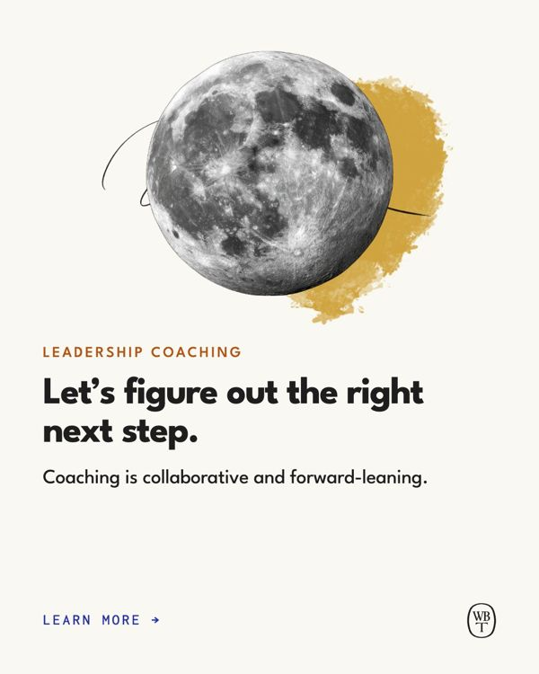
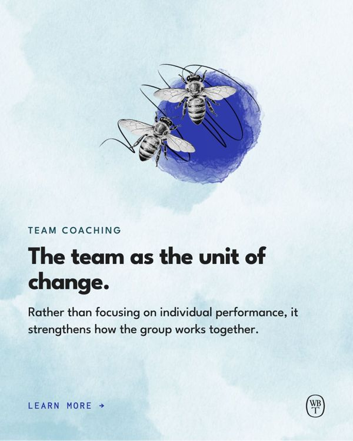
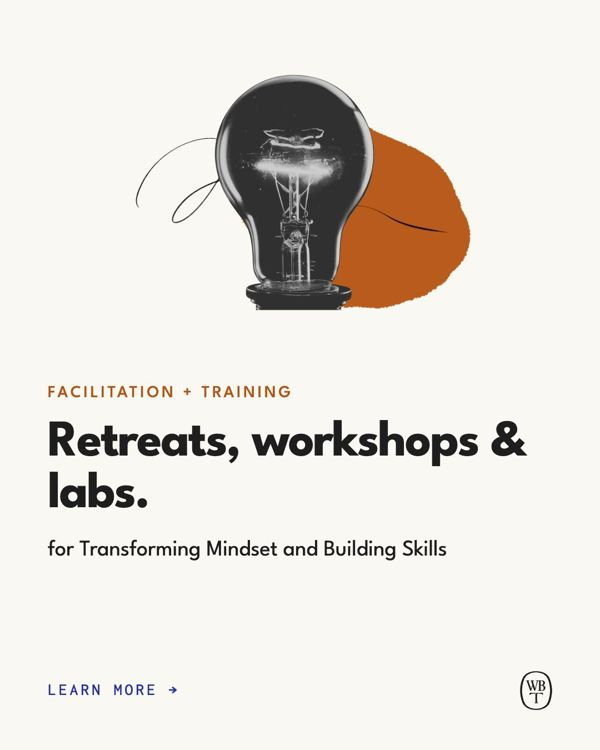
Testimonials
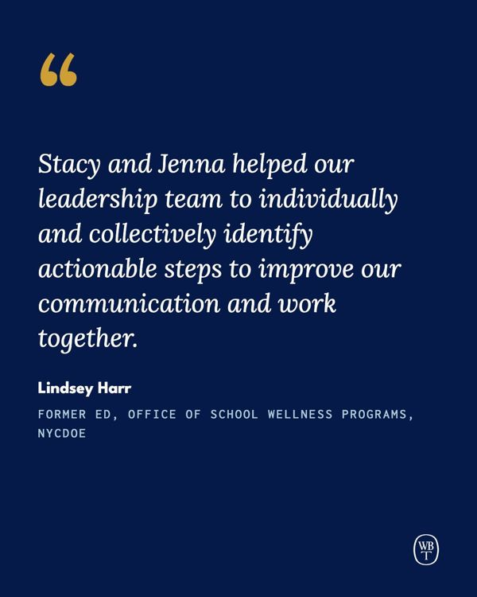
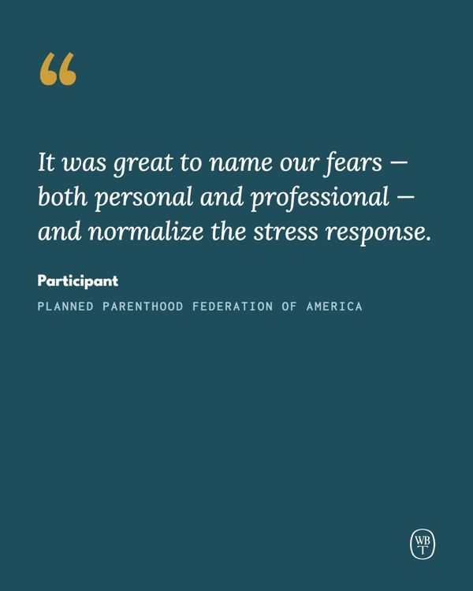
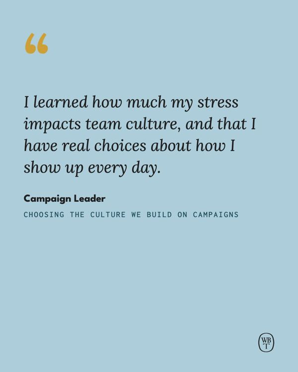
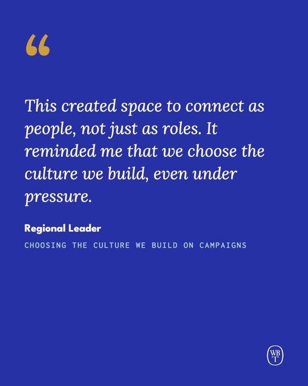
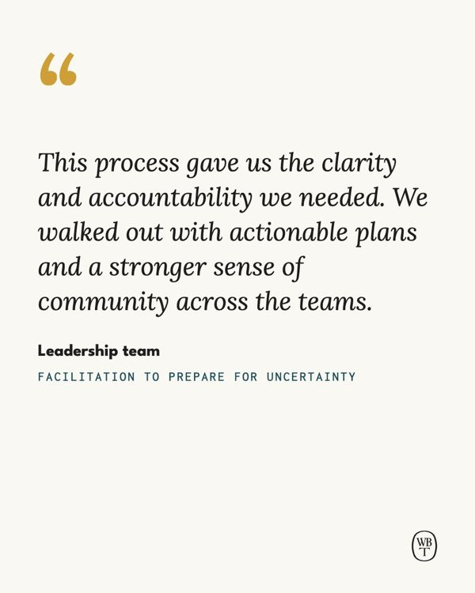
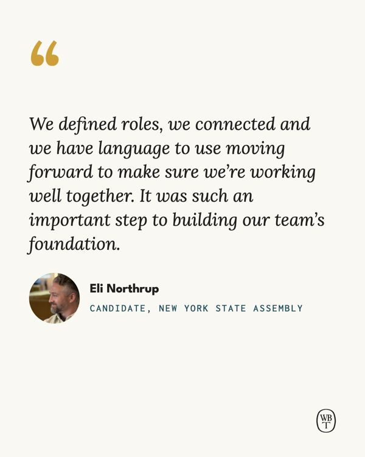
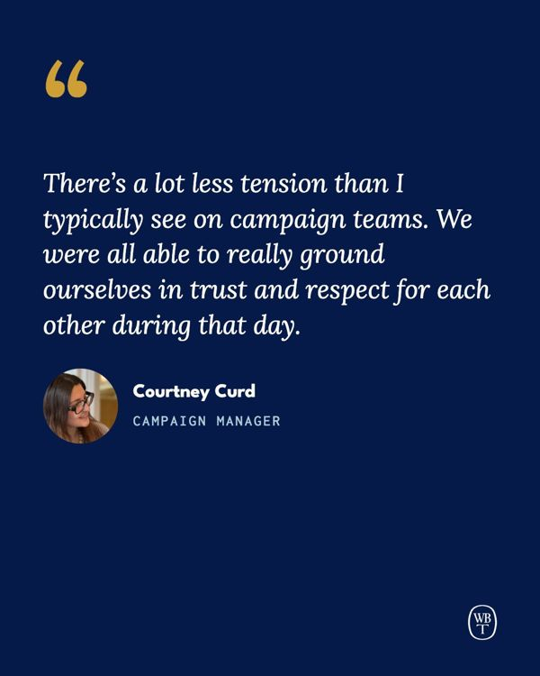
Stats
Resources
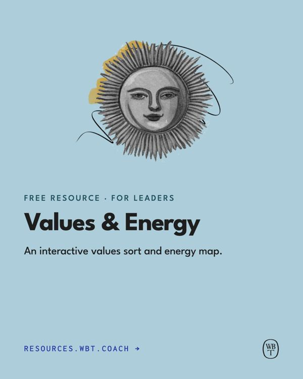
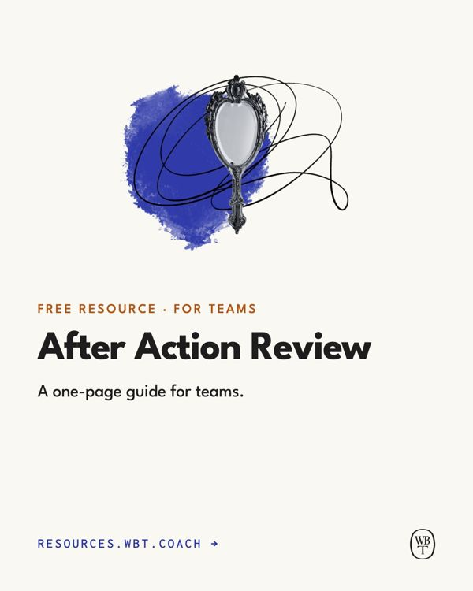
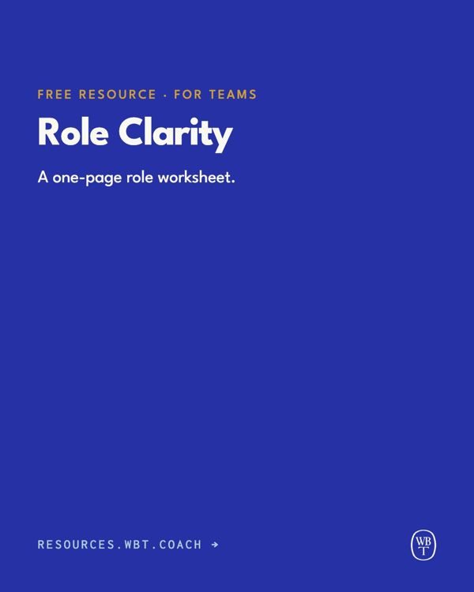
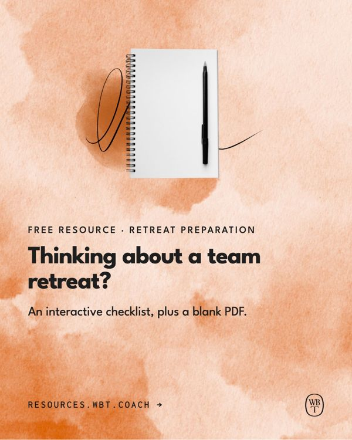
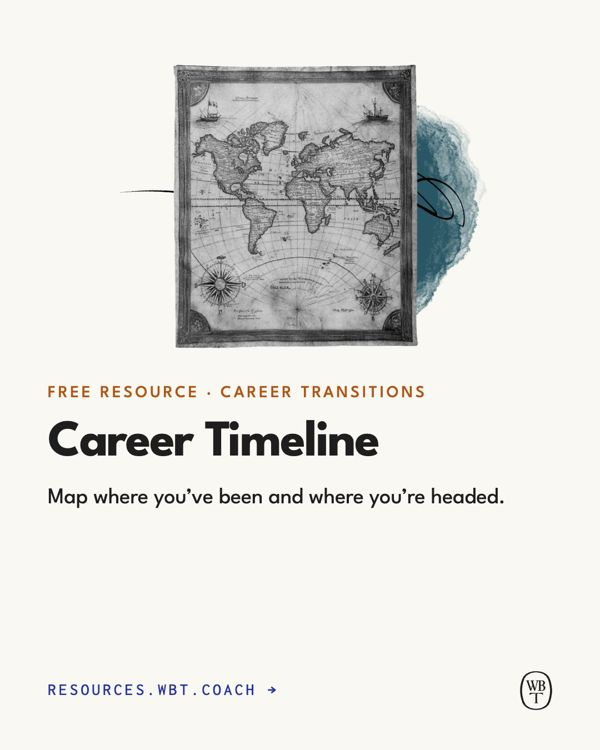
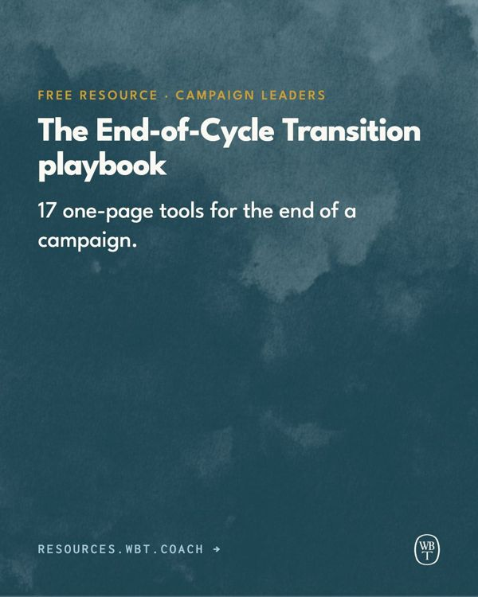
Insights
Each case study becomes a carousel that walks through its beats: the photo and title, The Challenge, Our Approach, what shifted, the client in their own words, and the key takeaway. Swipe through each row.
Stories at 1080×1920, with text kept out of the top 250px and bottom 340px where the app's buttons sit. Case studies tell the same beats as their carousels; each free resource gets a short series ending on the link.
Case studies
Free resources

- Sizes. Headlines 64–92px, body 36px or more, eyebrows 30px, nothing below 26px on a 1080px card. Phones show cards at a third of their size.
- Margins. 86px (8%) on every side. Text never touches the monogram: keep 24px clear around it.
- Logo. The monogram, bottom right, 70px tall. Black on light grounds, Clear White on dark.
- Collages. Spot, then scribble, then illustration, built from the real files. Scribbles stay black, so collage posts go on light grounds.
- Color. Mostly solid brand colors; a watercolor wash now and then. On dark washes, a tint of the same color keeps text readable.
- Words. Quotes and case study lines are word for word. Links go in the caption; on Stories, the web address and a link sticker.
- Stats. Intentional Blue or Honest Ochre on light grounds, Radiant Gold on dark. Always name the source.
- Motion. Posts can animate with Come Together: see Motion.
Make posts like these with the WBT Brand skill in Claude (staff: download it from the Skills tab on tools.wbt.coach). It knows these layouts, sizes and colors, uses our real collage files, and checks its own work. Try:
- Make an Instagram post with a client quote from our website.
- Turn our latest case study into a six-slide carousel and a Story.
- Make a three-part Story announcing our After Action Review worksheet.
- Make a stat post with the 70% leadership figure, on Clear White.